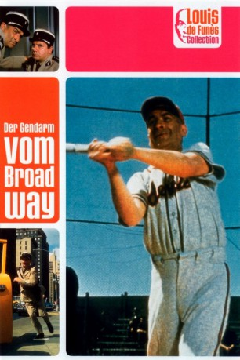

#4770 Der Gendarm vom Broadway
Alternativ: The Troops in New York (Englischer Titel)
 
 IMDB-Wertung: 6.4 / 10
IMDB-Wertung: 6.4 / 10  Metascore: 0
Metascore: 0 
Aufregung im verschlafenen Polizeidepartement in St. Tropez: Eine sechsköpfige Delegation soll nach New York fliegen, wo ein internationaler Polizeikongress stattfindet. Kaum im Big Apple gelandet, muss die Delegation feststellen, dass sie einen blinden Passagier dabei hat: Nicole, die hübsche Tochter des Chefs.
Jahr: 1965
Dauer: 101 Minuten
FSK: 6
Land: Frankreich Studio: Eckelkamp VerleihTonspuren:
Untertitel:
Auflösung: 1080p (1920x820) Größe: 7424 MB
Genre: Komödie
Regisseur: Jean Girault
Drehbuch: Pea Fröhlich
Soundtrack:
Darsteller:
 Louis de Funès als Maréchal des logis-chef Ludovic Cruchot
Louis de Funès als Maréchal des logis-chef Ludovic Cruchot Michel Galabru als Adjudant Jérôme Gerber
Michel Galabru als Adjudant Jérôme Gerber Jean Lefebvre als Maréchal des Logis Lucien Fougasse
Jean Lefebvre als Maréchal des Logis Lucien Fougasse- Alexander Scourby als
- Beatrice Pons als La standardiste , uncredited
- Christian Marin als Maréchal des Logis Albert Merlot
- Guy Grosso als Maréchal des Logis Tricard
 Michel Modo als Maréchal des Logis Berlicot
Michel Modo als Maréchal des Logis Berlicot- Alan Scott als Franck
- Geneviève Grad als Nicole Cruchot
 Marino Masé als Aldo
Marino Masé als Aldo- Mario Pisu als L'adjudant Renzo
- Albert Augier als Le présentateur de la publicité
- Jean-Pierre Bertrand als Le copain de Nicole
- Jean Droze als Un gendarme italien
- Leroy Haynes als Le chauffeur de taxi
- Billy Kearns als Le lieutenant de police
- René Lefevre-Bel als
- Denise MagLaglen als Une vendeuse
- Viviane Méry als
- John Prim als
- France Rumilly als Soeur Clotilde
- Carl Studer als
- Dominique Zardi als Un gendarme italien
- Vincent Baggetta als Un italien / An Italian , uncredited
- Renzo Cerrato als Un gendarme italien , uncredited
- Steve Eckardt als Un policier américain , uncredited
- Colin Higgins als Un policier américain , uncredited
- Roger Lumont als Le réceptionniste bilingue de l'hôtel , uncredited
- Jean Minisini als Un policier américain , uncredited
- Tiberio Murgia als L'épicier italien , uncredited
- Jean Mylonas als Un gendarme italien , uncredited
- Alan Rossett als Le réceptioniste , uncredited
- Percival Russel als Un policier américain , uncredited
- Swen als Le psychiatre , uncredited
- Pierre Tornade als Le médecin de bord , uncredited
- François Valorbe als L'interprète à l'hôtel , uncredited
Datei: X:\Person\Louis de Funès\Gendarm vom Broadway, Der (1965, FSK6, 1920x820).mkv seit 15.11.2016
Festplatte: HD Collection-7+mehr(A-Z)+Person
 Es gibt insgesamt 33 Filme in der Gruppe 'Person\Louis de Funès'
Es gibt insgesamt 33 Filme in der Gruppe 'Person\Louis de Funès'